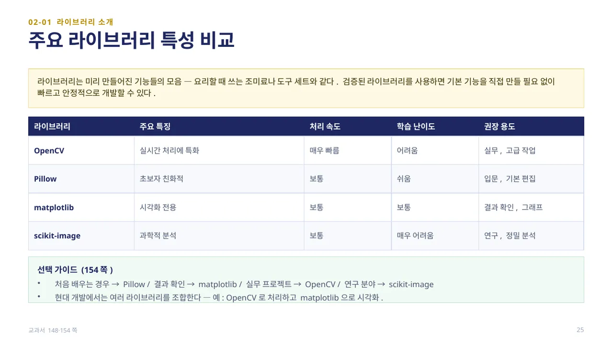
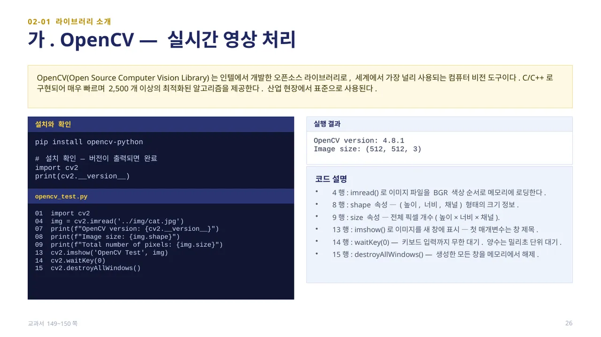
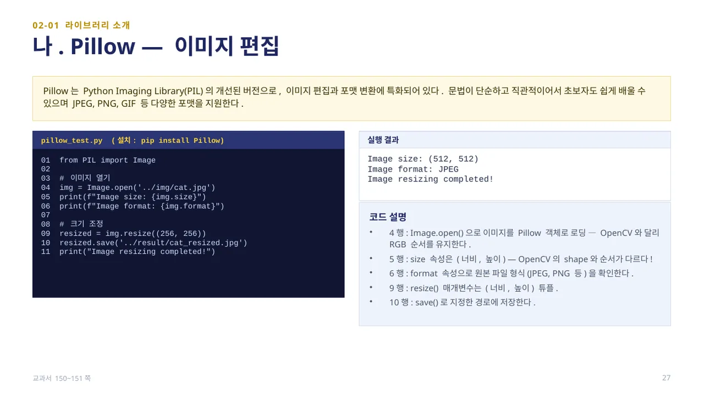
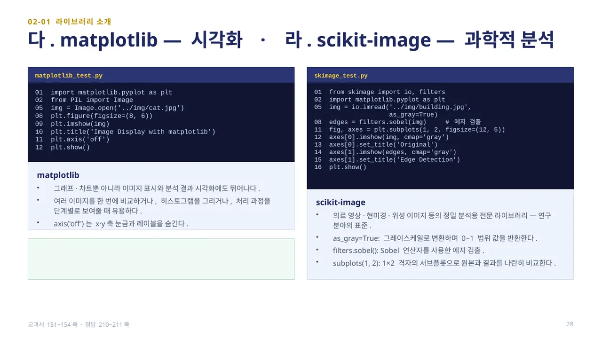
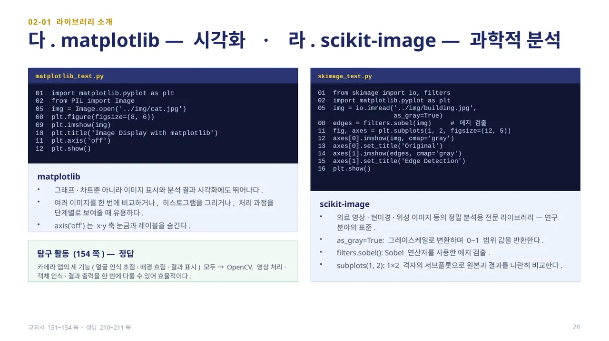

중단원 02. 컴퓨터 비전 라이브러리 활용 · 147–193쪽 소단원 01. 컴퓨터 비전 라이브러리 소개· 148–154쪽
이 웹 주제의 연계 범위: 147–154쪽
교과서 147–154쪽
OpenCV·Pillow·Matplotlib·scikit-image
입출력·편집·표시·분석 도구를 구별해 보세요.

라이브러리는 미리 만들어진 기능들의 모음으로, 요리할 때 쓰는 조미료나 도구 세트와 같습니다. 검증된 라이브러리를 사용하면 기본 기능을 직접 만들 필요 없이 빠르고 안정적으로 개발할 수 있습니다.
OpenCV는 실시간 처리에 특화되어 처리 속도가 매우 빠르지만 학습 난이도가 어려워 실무·고급 작업에 권장됩니다. Pillow는 초보자 친화적이고 학습 난이도가 쉬워 입문·기본 편집에 적합합니다. matplotlib은 시각화 전용으로 결과 확인·그래프에 쓰이고, scikit-image는 과학적 분석에 특화되어 연구·정밀 분석에 적합합니다.
선택 가이드(154쪽) — 처음 배우는 경우는 Pillow, 결과 확인은 matplotlib, 실무 프로젝트는 OpenCV, 연구 분야는 scikit-image가 좋습니다. 현대 개발에서는 여러 라이브러리를 조합합니다(예: OpenCV로 처리하고 matplotlib으로 시각화). (교과서 148·154쪽)

OpenCV(Open Source Computer Vision Library)는 인텔에서 개발한 오픈소스 라이브러리로, 세계에서 가장 널리 쓰이는 컴퓨터 비전 도구입니다. C/C++로 구현되어 매우 빠르며 2,500개 이상의 최적화된 알고리즘을 제공해 산업 현장에서 표준으로 사용됩니다. 설치는 pip install opencv-python, 설치 확인은 import cv2 후 print(cv2.__version__)로 합니다.
opencv_test.py — 4행cv2.imread()는 이미지 파일을 BGR 색상 순서로 메모리에 로딩합니다. 8행img.shape는 (높이, 너비, 채널) 형태의 크기 정보, 9행img.size는 전체 픽셀 개수(높이×너비×채널)입니다. 13행cv2.imshow()로 새 창에 표시하고, 14행cv2.waitKey(0)으로 키 입력까지 무한 대기하며(양수는 밀리초 단위 대기), 15행cv2.destroyAllWindows()로 창을 정리합니다 — 이 세 함수의 조합은 앞으로 모든 실습에서 반복됩니다. (교과서 149~150쪽)

Pillow는 Python Imaging Library(PIL)의 개선된 버전으로, 이미지 편집과 포맷 변환에 특화되어 있습니다. 문법이 단순하고 직관적이어서 초보자도 쉽게 배울 수 있으며 JPEG, PNG, GIF 등 다양한 포맷을 지원합니다. 설치는 pip install Pillow입니다.
pillow_test.py — 4행Image.open()으로 이미지를 Pillow 객체로 로딩합니다(OpenCV와 달리 RGB 순서를 유지). 5행img.size는 (너비, 높이) 순서로, OpenCV의 shape와 순서가 다릅니다. 6행img.format은 원본 파일 형식을 확인합니다. 9행resize()의 매개변수도 (너비, 높이) 튜플이고, 10행save()로 저장합니다. (교과서 150~151쪽)

matplotlib은 그래프·차트뿐 아니라 이미지 표시와 분석 결과 시각화에도 뛰어납니다. matplotlib_test.py의 8행plt.figure(figsize=(8,6))으로 크기를 지정하고, 9행plt.imshow(img)로 표시하며, 11행plt.axis(‘off’)는 x·y축 눈금과 레이블을 숨깁니다.
scikit-image는 의료 영상·현미경·위성 이미지 등 정밀 분석용 전문 라이브러리로 연구 분야의 표준입니다. skimage_test.py의 5행as_gray=True는 그레이스케일로 변환하며 0~1 범위 값을 반환하고, 8행filters.sobel()은 Sobel 연산자로 에지를 검출하며, 11행plt.subplots(1, 2)는 1×2 격자의 서브플롯으로 원본과 결과를 나란히 비교합니다.
탐구 활동(154쪽): 스마트폰 카메라 앱에서 얼굴 인식 후 자동 초점 맞추기, 인물 사진 모드 배경 흐림 효과, 결과 이미지 표시 기능을 개발하려면 어떤 라이브러리를 가장 우선으로 사용해야 할지 골라 이유를 설명해 봅니다.
답 보기답 숨기기

세 기능 모두 OpenCV를 우선 사용하는 것이 적절합니다. OpenCV에는 얼굴을 찾는 얼굴 검출 기능이 있어 초점을 맞추는 로직을 구현하기 쉽고, 마스크 처리·블러 필터·영역 분리 기능으로 배경 흐림 효과를 구현하기에 적합하며, 처리된 영상을 화면에 띄우는 기능도 제공합니다. 영상 처리·객체 인식·결과 출력을 한 번에 다룰 수 있어 효율적입니다. (정답 예시 210~211쪽)
직접 해 보세요
같은 240×160 이미지에서 Pillow.size와 OpenCV.shape가 어떻게 다른지 적으세요.
 인공지능 파이썬 실무
인공지능 파이썬 실무